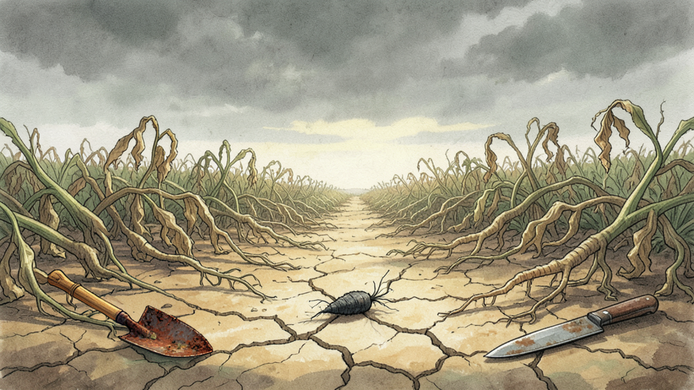
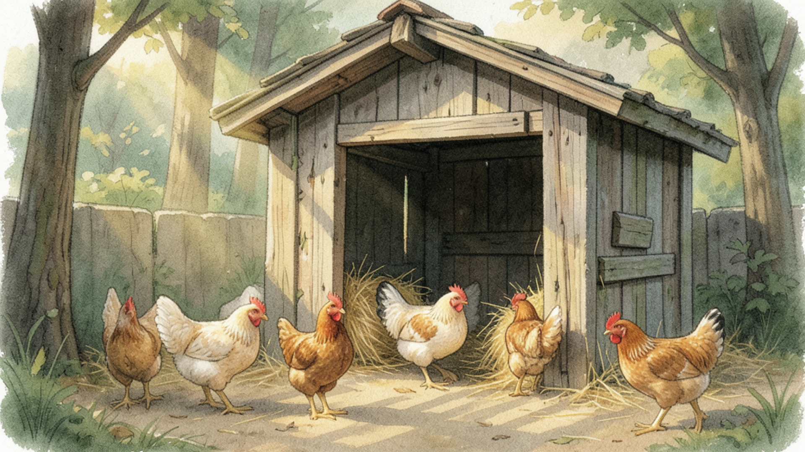

Act 1 tells one sunny day
Chosen for rq-6is9. The pictures stay as they are; the words change to match them. Highlighted words are the new text, struck words the old.
Option B — the last of the night's storm
The day is sunny, as the pictures show. The grey over the field is what's left of last night's storm, hanging on there. Ordinary weather, with no hint that the field is special.

Vegetable Field
Rows of withered crops stretch beneath a brooding gray sky.
Rows of withered crops stretch beneath the last grey of the night's storm. The earth is cracked and dry, with only a few stubborn carrots and a rusty hoe hinting at better days. A faint breeze rustles the brittle leaves, carrying the scent of soil and distant rain. These rows were green a month ago.

Village Well (unchanged)
An old stone well stands between the field and the forge, its stones worn smooth by countless hands. The water below lies dark and still, and a faint sour smell hangs in the cool, damp air.

Chicken Coop (unchanged)
A small wooden coop stands here, its planks patched and weathered. … Sunbeams slip through the slats, casting striped shadows on the dirt floor.
Pictures are kept exactly as they are; only the highlighted words change. The well, the coop (its sunbeams match its picture), the riverbank, the forest path and the glade keep their words. The healed text (“beneath an open sky”) still fits: by then the storm has moved on.
Option A — Elior wakes to a sunny morning
The three lines that call the morning grey now call it sunny, so the waking and the rooms outside tell the same day.

Waking from the dream
… The dark lets go of you, and you wake in your own bed. The storm is gone and there is grey morning morning sun in the curtains. Your heart is going hard. …

Cottage, lantern still dark
The curtains are still drawn on a grey bright morning, and the corner by your bed is too dark to see into. …
Cottage, lantern lit
Grey morning comes Morning sun comes through the lace curtains onto shelves lined with trinkets and memories. …
Three lines change, nothing else in the cottage.